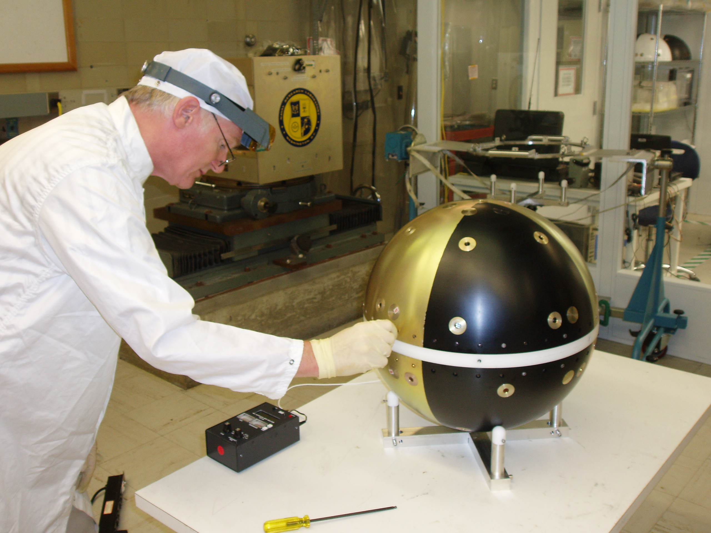
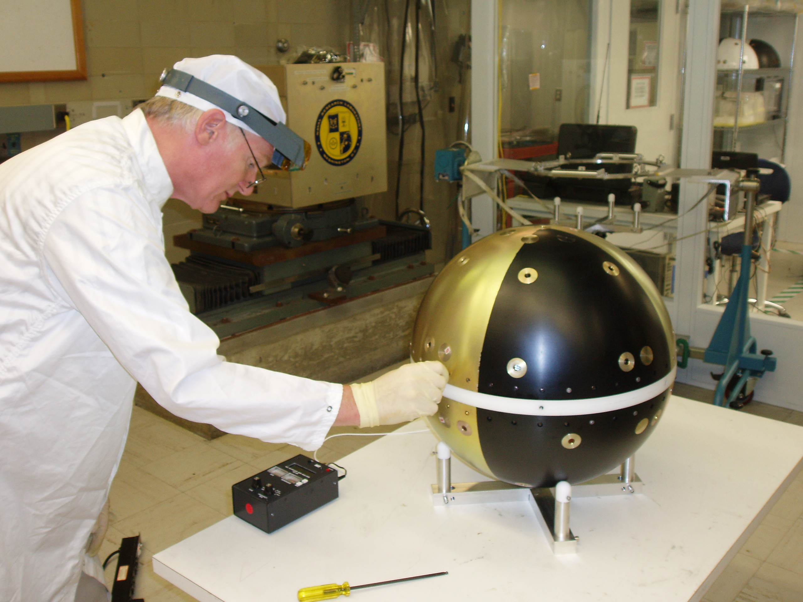

ANDE - MAA Documents
ANDE - MAA Documents
 50.8 kg
50.8 kg
US Naval Academy Satellite Lab
Bob Bruninga, WB4APR
Midn's Orloff(05), Kinzbrunner(05), Rose(05) and Schwarzer(05)
Midn's Aaron(04), Villalbi(04), and Weisenberg(04)
Midn's Kelley(03), Keller(03), Harris(03), Patterson(02), & Ensign Sillman(02)
Antenna Designers/Modelers: Bob WB4APR, Phil KF8JW, Bobby WB8FEW, Bob KC8QPM & Rick K8CAV
MAIN ANDE Page: See also the main ANDE page
that describes the mission, purpose and application of the ANDE spacecraft project.
DOCUMENTATION PAGE: This page will contain the latest drawings and documents related
to the ANDE project:
Flight Functional RF Test Plan(download)
Power System Safety Clarifications download (rev 3, 13 July 06)
Laser Power Modifications.
Drawing List and numbering plan
Parts List(MS Word format)
Functional Test Plan(text file)
Laser Functional BOX level Test Plan
 

Antenna Matching PI Circuit
SWR Testing
ANDE LICENSING: ANDE is Licensed for operations in the Amateur Satellite Service

LITHIUM PRIMARY BATTERY POWER SYSTEM: ANDE runs on 112 "D" cell Lithium thionylchloride cells
arranged in 4 packs of 7 strings of 4 cells in series. For higher resolution photos than these,
see batteries in box
and battery box on disk

Battery Box Preliminary design sketches:
Cell Arrangement,
Circuit Board,
initial concept.
Battery Board Schematic Drawing and
Battery Board PCB layout
Battery simulator.
Battery Life Management
uses 2 battery systems separately to yield measurable life data.
Earlier plan
Present design yields 1.5 year Power Budget. The
lithium discharge profile is very flat to end of life.
Primary Lithium Battery Type:
Tadrian TL-5930.
Thermal Specific Heat test .
Separation Switches location,
Detail Sketch,
and Sep Switch Functional Block Diagram.
Lithium Battery Testing:
Inadvertant Separation Switch Activation analysis.
Lithium Battery Reverse-Charge Test Plan,
Test Schematic, and
Cell Discharge Test configuration.
1st Lithium Battery Reverse-Charge Test:
Voltage,
Current, and
Temperature.
2nd Lithium Battery Reverse-Charge Test:
Voltage,
Current, and
Temperature and
Cell current.
3rd Lithium Battery Reverse-Charge Test #3 Test Plan
Flight Inspection: Test Plan, Test Report. High Temperature Test Plan, and Test Report
Cell acceptance Test Plan:
Hot (85C) Test Plan
UL Report on Tadiran batteries. Follow this link and enter the report number MH12193.
Click here
WIRING HARNESS AND CABLING: The cabling and wiring design is 98% complete. Only the
following issues remain to be resolved: Exact connector for GSE, and exact connector for
Laser harness. Also how to mount the two shell connectors and the cross-connect connectors
is still open.
Antenna cabling (New 5 Aug 2005)
Flight/GSE Plug ,
GSE Test Plan.
GSE Test Set,
GSE Interface Box.
Cable Layout (preliminary concept Sep 04)
Connector and Wiring harness layout (22 Mar)
Wiring diagram (rev 2, 10 May 05),
Old Wire diagram (Mar 05),
Old Wire diagram (Sep 04).
A side Wiring List Spread Sheet (New 20 July)
B side Wiring List Spread Sheet (New 20 July)
Separation Switch Test Report.
COMMUNICATIONS SYSTEM:
The communications system consists of a Kantronics KPC-3+ TNC, a Hamtronics
transmitter and receiver and a custom interface board to hook it all together.
These are all mounted in a 1" tall box on top of the battery boxes.
Flight TX modifications and assembly, and
RX mods and assembly.
Comm Interface Test Set .
and Test Plan. [New 14 May 05]
TX-RX Connections. [New 14 May 05]
Interface Board and Comms tray Layout.
Interface Board Printed Circuit Design.
Interface Board Parts Locations.
Sleep/wake timer...
See the background TNC-ON Transients,
OFF-Transients,
and DCD Detection waveforms.
Text-to-Speech Schematic....
with the supportingText description
and a link to the MFR's documentation.
TELEMETRY SYSTEM:
TNC Mods for Telemetry
and a Photo of TNC mods to bring TLM to DB-25 connector
Sensors.
Telemetry Equations.
Telemetry Schematic, Old version.
Telemetry Conditioning Circuits.
Thermister Curve
ANTENNA SYSTEM:
Antenna cabling (New 5 Aug 2005)
T/R Switching Circuit
Preliminary Antenna Matching Circuit.
Prelimiinary Antenna testing connections.
Preliminary SWR resonance achieved at 145 MHz. on orignal Peterson Model.
Debugging problems
TNC ROM defaults.
Background notes and supporting justification used in the design:
Terminal Node Controller (photo)
VHF 3 Watt Transmitter (photo)
VHF receiver (photo) (pots are removed for flight model).
ANDE Frequency Selection (2m downlink) and the actual
IARU Frequency Request
ANDE User Expectations
Link Budget
Click here to download EXPRESSPCB.pcb file.
Use the free ExpressPCB software to view it.
Telemetry Multiplexer ,
RunTime Counter, and
Interface Board changes required .
Telemetry format and equations .
Other Documents and drawings:
Two man lift system.
GSE Test Equipment and Test Plan.
Here are several additional PHOTOS, DRAWINGS and Documents reorganized by topic:
The Prototype
Preliminary Internal Structure Sketch
You are visitor:
 since 1 October 2002.
since 1 October 2002.
Send comments, suggestions, feedback to bruninga@usna.edu
Obsolete ideas:
The original COMM plan
Original Comms proposal
Suggested Morse Code sequence for Lasers.
Original A/B Battery/Shell Harness
and A/B Cross Connect harness.
Temprorary Sketch of possible sep system
Look at this idea for mounting the Laser Driver on the shell.
Sep Switch locations
Space Test Program Payload Requirements Document
A commercial
wideband spherical antenna design. Probably not applicable to our needs.
Drawing template
.
{kind=link}
{kind=link}
{kind=link}
{kind=link}
{kind=link}
{kind=link}
{kind=link}
{kind=link}
{kind=link}
{kind=link}
{kind=link}
{kind=link}
{kind=link}
{kind=link}
{kind=link}
{kind=link}
{kind=link}
{kind=link}
{kind=link}
{kind=link}
{kind=link}
{kind=link}
{kind=link}
{kind=link}
{kind=link}
{kind=link}
{kind=link}
{kind=link}
{kind=link}
{kind=link}
{kind=link}
{kind=link}
{kind=link}
{kind=link}
{kind=link}
{kind=link}
{kind=link}
{kind=link}
{kind=link}
{kind=link}
{kind=link}
{kind=link}
{kind=link}
{kind=link}
{kind=link}
{kind=link}
{kind=link}
{kind=link}
{kind=link}
{kind=link}
{kind=link}
{kind=link}
{kind=link}
{kind=link}
{kind=link}
{kind=link}
{kind=link}
{kind=link}
{kind=link}
{kind=link}
{kind=link}
{kind=link}
{kind=link}
{kind=link}
{kind=link}
{kind=link}
{kind=link}
{kind=link}
{kind=link}
{kind=link}
{kind=link}
{kind=link}
{kind=link}